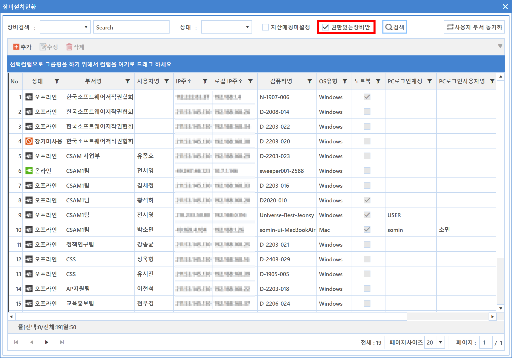

4-1-1-2. 권한있는 장비 확인
4-1-1-2. 권한있는 장비 확인
Source: https://www.sweeper.or.kr/etc/manual/4112.html
4-1-1-2. 권한있는 장비 확인
4. 일반정보 ›› 4-1. 장비관리 ›› 4-1-1. 설치현황 ››


관리자가 권한이 부여된 장비만 볼 수 있습니다. SWeeper는 기본적으로 권한과 관계없이 모든 장비를 확인할 수 있으며, 권한이 부여된 장비만 수정이나 명령을 수행할 수 있습니다.

참고사항
위 이미지에서 장비추가나 명령전송 등이 활성화되어 보이지만, 실제 장비 추가나 명령전송시 권한에 따른 제약을 만나게 됩니다.
관리자의 권한 관련 자세한 사항은 8-1-3. 권한관리을 참고하시기 바랍니다.
© Copyright SWeeper Inc.. All Rights Reserved